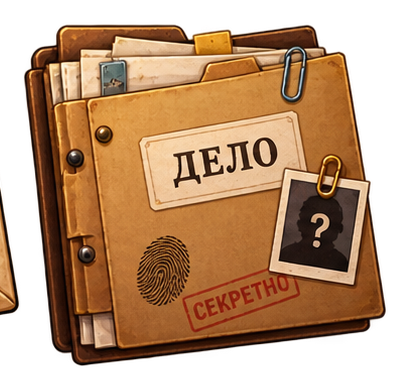
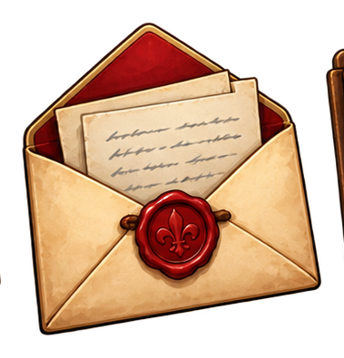
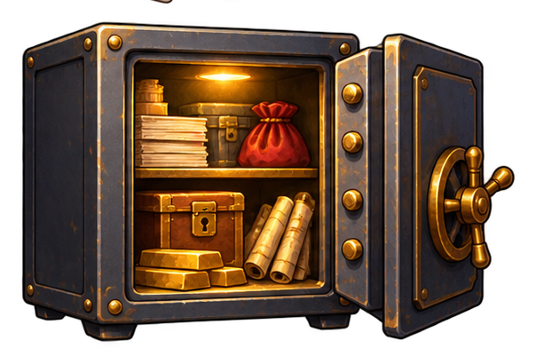
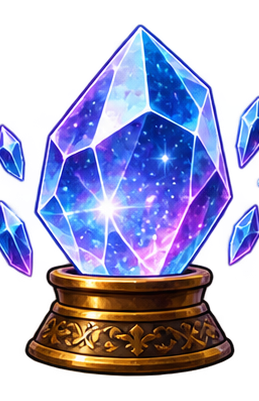

Срочный вызов
Кристалл исчез.
Я веду это дело, а ты будешь аналитиком. У нас шесть локаций. В каждой — несколько математических улик. Ошибка не заканчивает расследование: она открывает подсказку, а прототип попадёт в список для повторения.

Из музея исчез «Кристалл случая». Камеры молчали ровно десять минут. Остались только случайные события, журналы опытов и схемы. Пройди все 18 прототипов №10 и восстанови дело.

Я веду это дело, а ты будешь аналитиком. У нас шесть локаций. В каждой — несколько математических улик. Ошибка не заканчивает расследование: она открывает подсказку, а прототип попадёт в список для повторения.


Все 18 прототипов №10 проверены. Ниже — досье с результатами.

